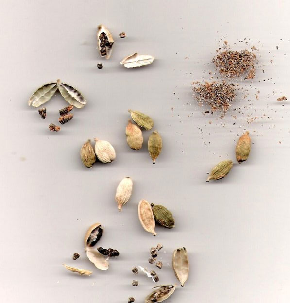

Cardamom

Common Name: Cardamom
Genus Species: Elettaria cardamomum
Family: Zingiberaceae
Origin: Near East and Ceylon (Sri Lanka)
Cultivation: India, Ceylon (Sri Lanka), Cambodia, Guatemala, El Salvador
Description: Several varieties of seed plants are known as cardamon, but the best known
is an export from India, where it is obtained from a ginger-like plant, Elettaria
cardamomum. It is related to black cardamom, and to melegueta (also known as grains of
paradise), a peppery cardamon-like seed which grows mainly in West Africa; this was a
popular European import in the Middle Ages and the Renaissance. Cardamom is particularly
popular in Arab countries for flavoring coffee, and perhaps half the world’s production
is thus used. Cardamom and related spices were used by the Romans, and it remains
popular in baked products in Scandinavian and Baltic countries. The seeds are widely
used in cooking and in chewing products (similar to chewing gum) in India and Pakistan,
and in Persian cuisine, but it is not widely appreciated in North America as a cooking
spice or as a flavor in candies or beverages. Its exotic qualities have suggested it
could be used as a stimulant and aphrodisiac, and long ago it was used as a perfume and
breath freshener.
Recipes that Use Cardamom: